야지 실물 시험 — 11/12, 27회
숲길·오르막에서 자율주행 27회. 장소(3D 맵)별로 묶었다. 휴대폰으로 따라 찍은 영상으로 만든 3D 지형 위에 로봇 위치·자세를 맞춰 다시 그렸고, 뒤로 밀린 구간을 표시했다. 카드를 누르면 실험별 상세(영상·수치·플래너 상태·밀림·주행 카드).
맵1 · 숲길 오르막 (약 7°) 2회
휴대폰 영상 3D 맵. 13:24·13:29 두 주행이 로봇 카메라로 정밀 정합(오차 3 cm), m 단위·중력 기준.

맵3 · 낙엽 숲길 8회
13:01 정밀(6 cm)이 기준, 나머지는 따라 찍은 휴대폰 위치로 대략(±1 m) 정합.
 11/12 12:21
11/12 12:21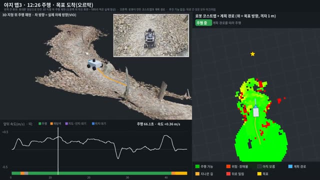
11/12 12:26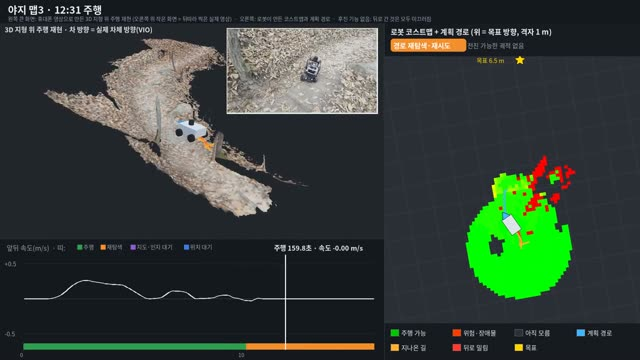
11/12 12:31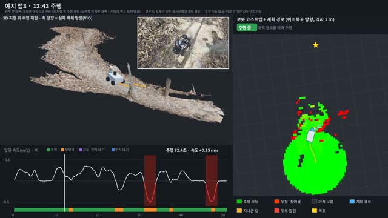
11/12 12:43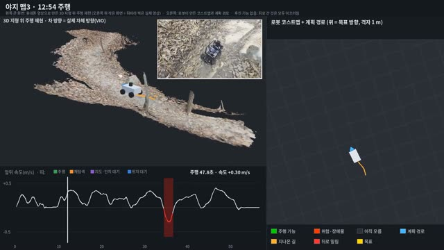
11/12 12:56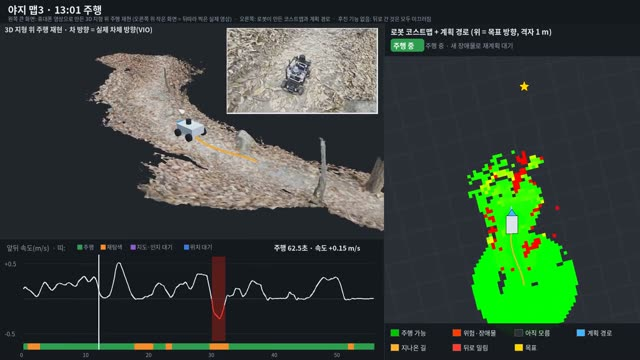
11/12 13:01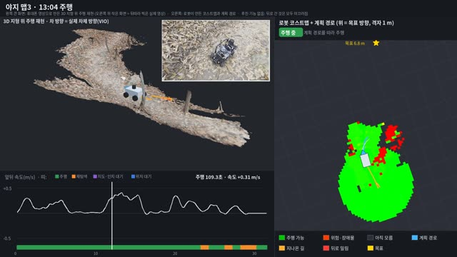
11/12 13:04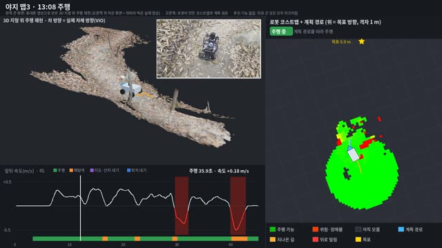
11/12 13:08맵4 · 울타리 길 2회
12:03이 로봇 카메라 41장으로 정밀 정합(3.5 cm) → 이 맵의 중력·m 단위 기준. 12:07 목표 도착.

맵5 · 나무 난간 길 2회
정밀 주행이 없어 축척(휴대폰↔VIO)·위 방향(지면)을 추정한 맵.
3D 맵이 없는 장소 10회
실제 영상 + 로봇 코스트맵만. 10:41·10:49·10:53은 다른 휴대폰(카톡) 영상을 화면 움직임↔로봇 속도 상관으로 맞춤.
 11/12 10:41
11/12 10:41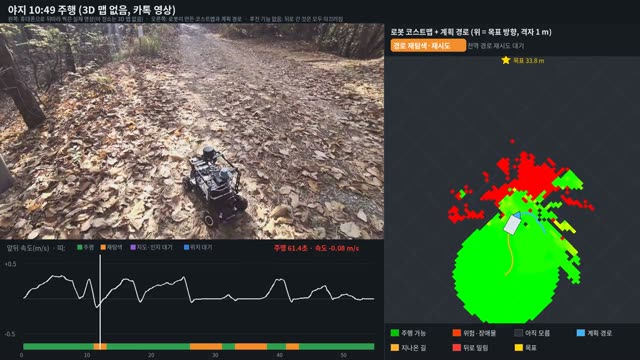
11/12 10:49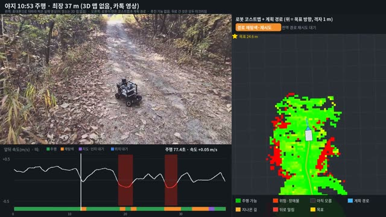
11/12 10:53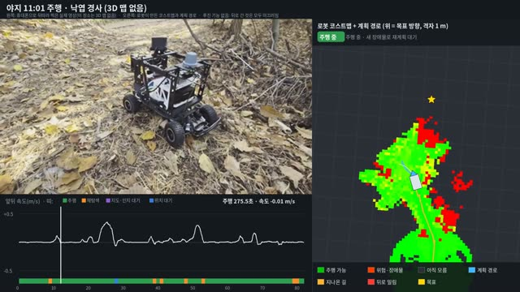
11/12 11:01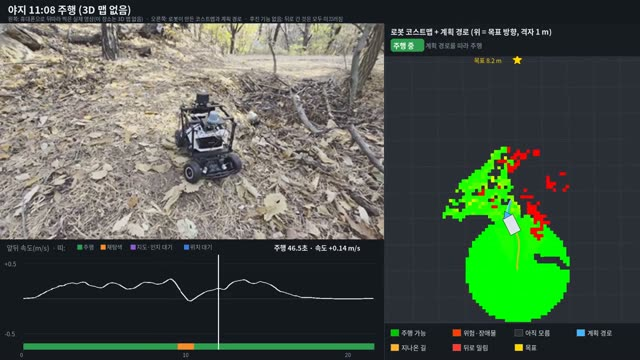
11/12 11:08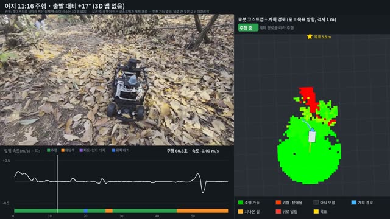
11/12 11:16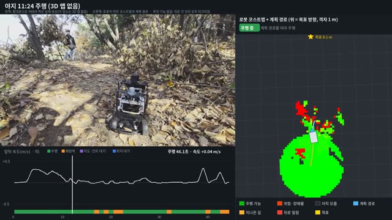
11/12 11:24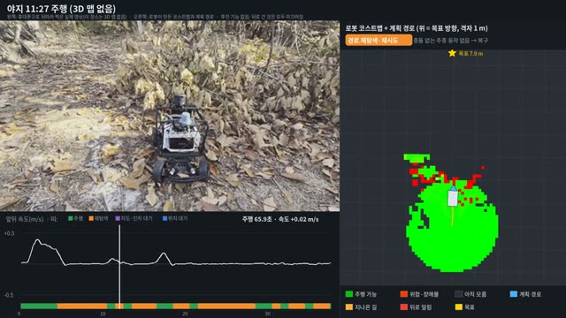
11/12 11:27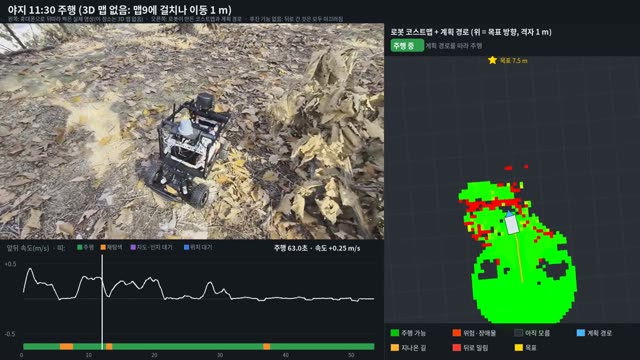
11/12 11:30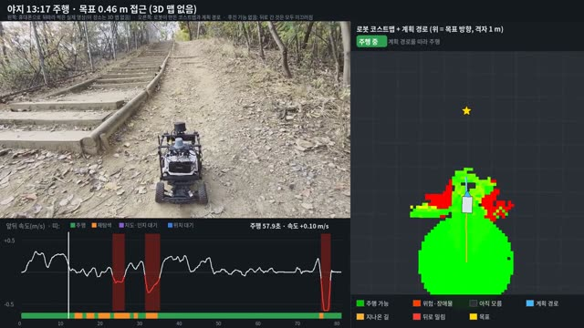
11/12 13:17영상 없음 3회
따라 찍은 영상이 없어 주행 카드만 있음.

읽는 법
막대 = 플래너가 시간을 쓴 비율(초록 주행, 주황 경로 재탐색, 보라 지도·인지 대기, 노랑 도착). "밀림"은 후진 기능이 없는데 뒤로 0.3 m 넘게 움직인 것(사람이 옮긴 구간 제외).